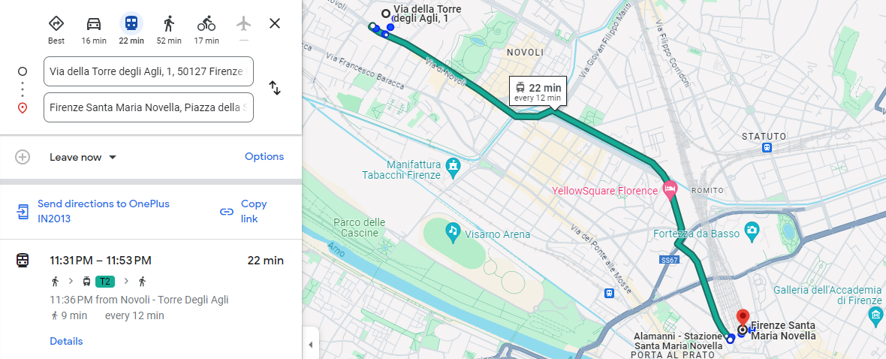

Come arrivare
Di seguito puoi trovare le informazioni su come raggiungere l'appartamento. Visita la sezione Trasporti pubblici per informazioni sui trasporti pubblici e per raggiungere il centro storico.
Dall'aeroporto di Firenze
- Prendi il Tram T2 dalla fermata Peretola Aeroporto appena fuori l'Aeroporto Amerigo Vespucci e dirigiti in direzione Unità. Scendi a Novoli - Torre degli Agli. Il viaggio in tram dura 10 minuti, con tram che passano ogni 6 minuti. Dalla fermata del tram, ci vogliono 2 minuti a piedi per raggiungere l'appartamento in Via della Torre degli Agli, 8.


Dalla stazione di Santa Maria Novella
- Dalla fermata del tram Unità, che si trova vicino alla stazione ferroviaria di Santa Maria Novella, prendi il Tram T2 e scendi alla fermata Novoli - Torre degli Agli. Il viaggio in tram dura circa 19 minuti, con tram che passano ogni 6 minuti. Dalla fermata del tram, ci vogliono 2 minuti a piedi per raggiungere l'appartamento in Via della Torre degli Agli, 8.



Dall'aeroporto di Pisa
- Dall'aeroporto di Pisa, prendi il Pisa Mover in direzione stazione ferroviaria di Pisa Pisa Centrale. Una volta arrivato alla stazione di Pisa, prendi un treno per la stazione di Firenze Santa Maria Novella. Il viaggio in treno richiede circa 1 ora e 15 minuti.
- In alternativa, puoi prendere un autobus direttamente dall'aeroporto alla stazione centrale degli autobus di Firenze, che si trova molto vicino alla stazione di Santa Maria Novella. Il viaggio in autobus richiede circa 1 ora e 45 minuti.
- Una volta arrivato a Firenze, prendi la linea del Tram T2 e scendi a Novoli - Torre degli Agli. Il viaggio in tram dura 10 minuti, con tram che passano ogni 6 minuti. Dalla fermata del tram, ci vogliono 2 minuti a piedi per raggiungere l'appartamento in Via della Torre degli Agli, 8.
In auto
- Parcheggio pubblico gratuito e a pagamento disponibile su Via della Torre degli Agli e strade circostanti. Si prega di notare che i posti auto sono soggetti a disponibilità e possono essere limitati durante le ore di punta. Controllare sempre eventuali restrizioni o segnaletica. Di solito, puoi trovare posto per parcheggiare nel piazzale di fronte Via della Torre degli Agli, 1.

Note
- L'appartamento è a 2 minuti a piedi dalla fermata del tram Novoli - Torre degli Agli, che si trova sulla linea del Tram T2 che collega l'aeroporto di Firenze al centro città e alla stazione ferroviaria di Santa Maria Novella.
- 10 minuti per l'aeroporto.
- 19 minuti per la stazione ferroviaria di Santa Maria Novella.
- 19 minuti per il centro città.